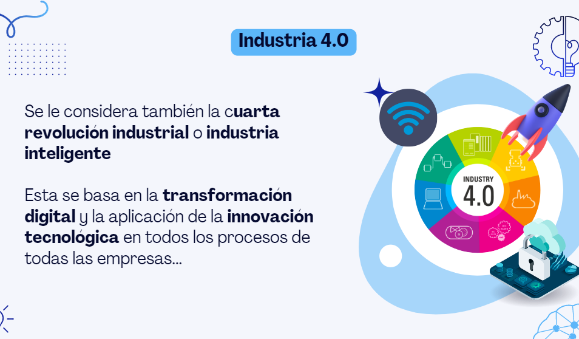
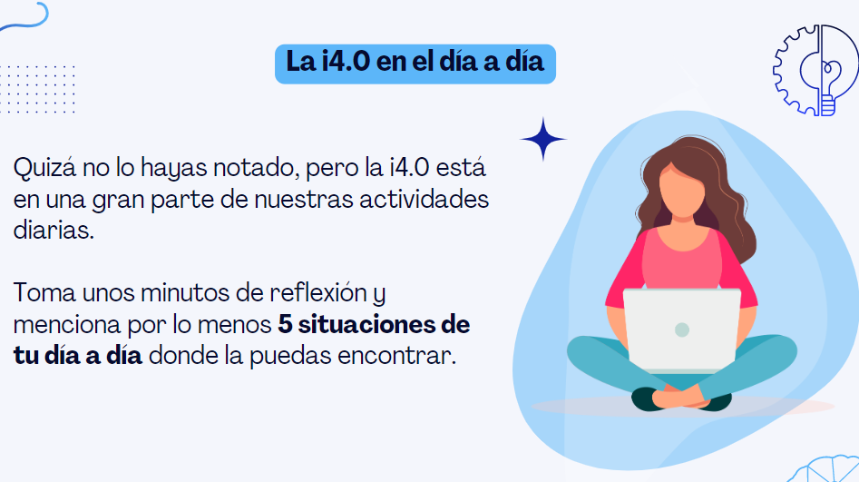

INICIO
INDUSTRIAS 4.0
La Cuarta Revolución Industrial,
también conocida como Industria 4.0 o Revolución industrial etapa cuatro,
es la cuarta etapa industrial más importante que se ha verificado
desde el inicio de la revolución industrial en el siglo xviii.
Esta cuarta etapa se caracteriza por una fusión de tecnologías
actualmente en prueba o en desarrollo, lo que está desintegrando las fronteras
entre las esferas física, digital, y biológica.1
GENERACION 4.0
Industria 4.0 no es solo invertir en tecnología y herramientas nuevas
para mejorar la eficiencia en la manufactura; se trata de revolucionar
la manera en la que opera y crece toda su empresa. Este recurso le proporcionará
una descripción detallada sobre el tema de Industria 4.0 e IIoT.

COMO ES EL DIA AL DIA?
La Industria 4.0 empodera a los dueños de empresas
para controlar y comprender mejor cada aspecto de su operación y les permite aprovechar
datos instantáneos para aumentar la productividad, mejorar los procesos e impulsar el crecimiento.
Se interconecta con sistemas de back-end, como la planificación de recursos empresariales (ERP),
para brindar a las empresas un nivel de visibilidad y control sin precedentes. En definitiva,
la Industria 4.0 es una parte importante de la transformación digital de cualquier empresa.
